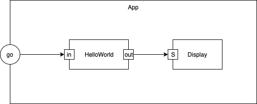

In this essay, I describe the steps I take to build a very simple box-and-arrow app, called HelloWorld.
The simplest box-and-arrow app that I can think of consists of two boxes - one that outputs the string “hello world” and another box that displays any string sent to it.
The program is contained by a top-level box called App.
The top-level box has one input - “go”. Sending anything into the “go” pin causes the first box to output “hello world” and send that string to the display box.
The diagram for this system appears in Fig <$n:figure:Hello World> below:
 Fig <$n:figure:Hello World>Hello World
The first time through, I write the code manually, to get a “feel” for what the editor needs to output.
The code is written in DSL form.
The program in Fig. <$n:figure:Hello World> looks like:
schematic App { contains: HelloWorld contains: Logger wire HelloWorld.out -> Logger.S wire my.go -> HelloWorld.in }
component HelloWorld { when go: Send(out,“Hello World”); }
component Logger { when S: console.log(S.data); }
I will change / upgrade this later, but it is a good starting point.
What’s missing? Schematics can contain more than one part of the same Kind (aka type), but in this simple example, each part has a unique Kind. Later, we will want to fix this by giving each part a unique name as well as a Kind, or, by creating a syntax for Kind synonyms, or, maybe some other idea will come to us.
For now, the Kind and the part name are one in the same. For example, the HelloWorld part has the name “HelloWorld” and has the Kind “HelloWorld”.
The first time through, I transpile the diagram into code for some language, manually. Again, this will give me a “feel” for what the diagram transpiler will need to do.
I choose to target the language JS (JavaScript). Any language that supports closures should make this “easy”.1 I think that many people can read JS.
The resulting JS code is filled with details.
This is a good example of how details detract from thinking about Architecture. The Architecture of this simple diagram is lost in a sea of details…
The main implementation detail is that we create a closure (aka anonymous function) for each component. We also create a closure for the top-level App. I’ve chosen to not use prototype inheritance, and, I’ve chosen to eschew optimization - that can come later, let’s just get this to work.
Note that prototype inheritance actually costs runtime. The DSL will expand all components into full code, including all inherited code/properties. DRY2 happens at the DSL level and we don’t care what happens at the JS (assembler) level. JS’s inheritance mechanism will actually make the code run slower. It’s the same with all OO inheritance - we trade off code-based DRY for compile-time efficiency.3
Note that the code for the schematic (composite) part, “App”, is different from the leaf parts “HelloWorld” and “Logger”.
I, also, build the kernel code manually, so we can see what is going on…
Events appear as JS objects {‘inputPin’:…, 'outputPin:…, ‘data’:…}.
[paragraph deleted4 - the Architecture will be more clearly expressed as per the next paragraph]
There are four (4) cases of event sending that need to be considered:
These cases are broken out in the function distributeSingleOutput().
Every part has a ‘parent’ field. The top-level part will have null as its parent.
Every part has one (1) input queue and one (1) output queue. The input queue is required to allow the parts to work in an asynchronous manner. The output queue decouples outputs from the rest of the system - allowing for deferred Send()s. It is possible to get into a situation of runtime rendezvous spaghetti chains unless we use deferred Send()s.5
In all of the manually written code, I’ve chosen to ignore all error edge cases, for clarity. This code cannot be used for production, but, we are going to replace the code with automatically transpiled code, later.
We are building this code in a sequential environment, so, isBusy() is always false for leaf parts and is calculated recursively for schematics (true if any child is (recursively) busy).
IsBusy() is used by the isReady() function, which is used by the dispatcher().
IsBusy() needs more attention when the kernel is running in a truly asynchronous (bare metal, no O/S) environment.
Note the API:
Inject() pushes an event onto the input queue of the top-level part and starts the dispatcher(). Inject() can be called multiple times, if multiple events need to be sent into the top-level part. This version of Inject() is written to work in a synchronous (call/return) environment. Inject() would be slightly different in a bare-metal environment.
Send() is almost like Inject(), except that it does not start the dispatcher(). The dispatcher is already running when Send() is called by a part.
The app user must be careful to call Inject() at least once from the outside.
Kernel.js now contains the kernel.
“HelloWorld-Simple Hello World.svg” now contains the diagram.
Helloworld.html contains the manually transpiled parts.
Helloworld.html shows the diagram and runs the App.
I learned to think in closures using CL (Common Lisp). YMMV. ↩
Don't Repeat Yourself ↩
JS calculates inheritance chains at runtime, OO can calculate inheritance chains at compile–time. The DSL just spits out final versions of each component. We would need to run experiments to see if the DSL approach is more efficient than the OO approach. JS is the worst of the bunch, but we really don't care – what matters is only what the user experiences. ↩
It used to read “For clarity of Architecture, I choose to segregate input pins from output pins in the event objects. This is probably the first thing that will be optimized (one ‘pin’ is enough, if we overload the meaning of ‘pin’ to be appropriate for the situation (input vs. output)).” ↩
Don't worry about this detail for now. It is only important in bare–metal situations, i.e. no operating system (e.g. throwing out Linux on IoT devices, and replacing it with this stuff). ↩